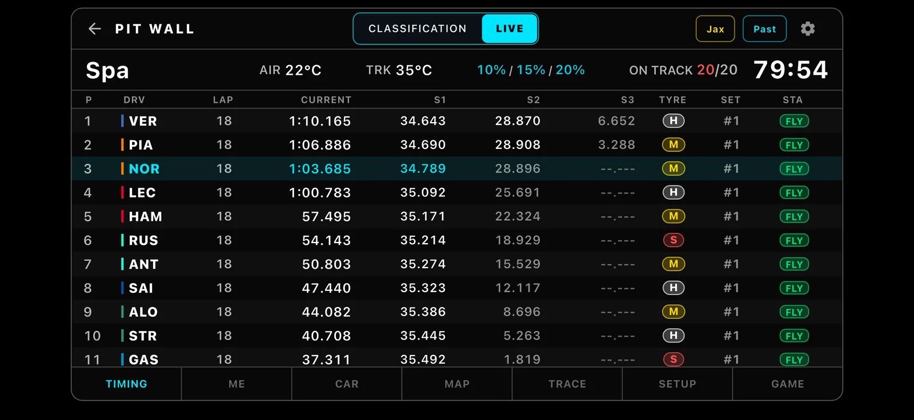

Free
- TIMING: the full CLASSIFICATION, every driver
- GAME: the session's game settings
- ME: your laps and stints
- SETUP: your setups this session, by name
How it works
Timing, your laps, car health, the live map, traces, setups and game settings, tab by tab.
From the Dashboard, tap the PIT WALL bar on the right edge. The Pit Wall slides in over the Dashboard; tap the DASHBOARD bar or the back arrow to return.
From the Home screen, open Pit Wall directly. This is handy on a second device, for a friend acting as your engineer, or when you only want timing. Use the back arrow to leave.
The header always shows the track, air and track temperatures, the rain forecast, the number of cars on track and the session clock.



MAP and TRACE each carry an expand control in their top-right corner. Tap it to fill the screen with a live view, then use the close control to return to the tab you were on.
If the game moves on to a new session while you're on the Pit Wall, JMD tells you the previous session ended and was saved, and starts following the new one. Tap OK.
A locked tab names the feature and what Jax Pro adds, and opens the subscription screen when tapped. The built-in demos show every tab in full.